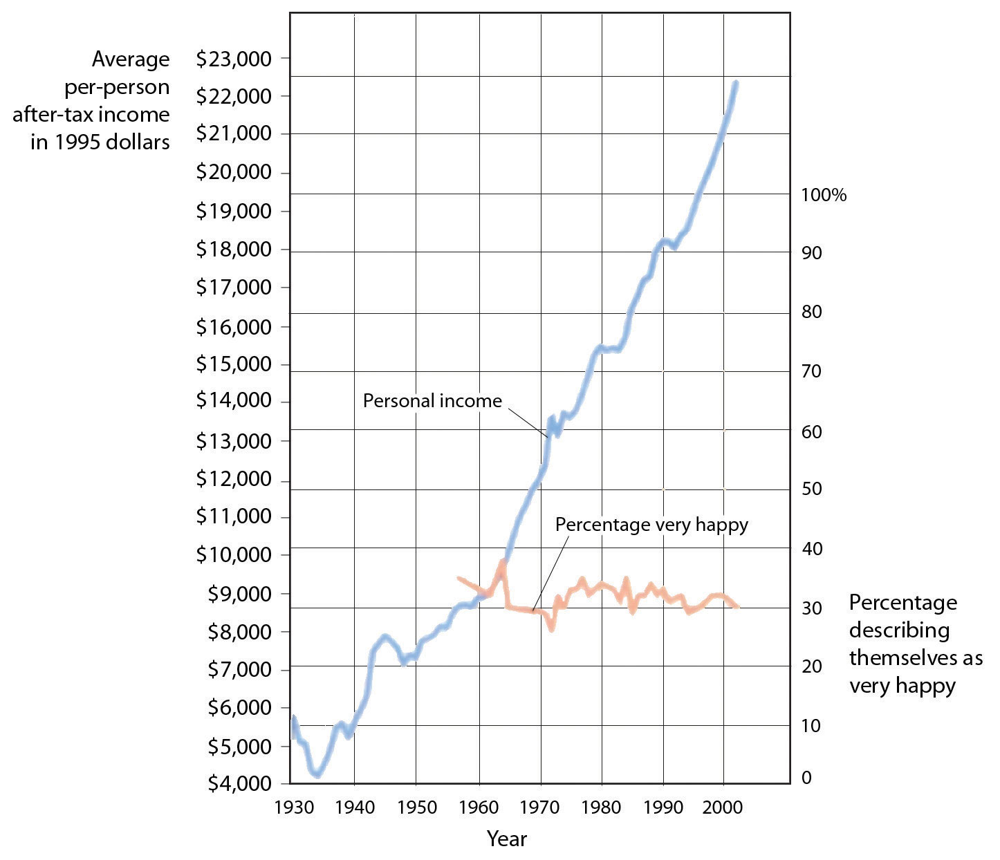

No matter how healthy and happy we are in our everyday lives, there are going to be times when we experience stress, depression, and anxiety. Some of these experiences will be major and some will be minor, and some of us will experience these emotions more than others. Sometimes these feelings will be the result of clear difficulties that pose direct threats to us: We or those we care about may be ill or injured; we may lose our job or have academic difficulties. At other times, these feelings may seem to develop for no apparent reason.
Although it is not possible to prevent the experience of negative emotions entirely (in fact, given their importance in helping us understand and respond to threats, we would not really want to if we could), we can nevertheless learn to respond to and cope with them in the most productive possible ways. We do not need to throw up our hands in despair when things go wrong—rather, we can bring our personal and social resources to bear to help us. We have at our disposal many techniques that we can use to help us deal with negative emotions.
Perhaps the most common approach to dealing with negative affect is to attempt to suppress, avoid, or deny it. You probably know people who seem to you to be stressed, depressed, or anxious but who cannot or will not see it in themselves. Perhaps you tried to talk to them about it, to get them to open up to you, but were rebuffed. They seem to act as if there is no problem at all, simply moving on with life without admitting or even trying to deal with the negative feelings. Or perhaps you have taken a similar approach yourself: Have you ever had an important test to study for or an important job interview coming up, and rather than planning and preparing for it, you simply tried put it out of your mind entirely?
Research has found that there are clear difficulties with an approach to negative events and feelings that involves simply trying to ignore them. For one, ignoring our problems does not make them go away. Not being able to get our work done because we are depressed, being too anxious to develop good relationships with others, or experiencing so much stress that we get sick will be detrimental to our life even if we cannot admit that it is occurring.
Suppressing our emotions is also not a very good option, at least in the long run, because it tends to fail (Gross & Levenson, 1997).Gross, J. J., & Levenson, R. W. (1997). Hiding feelings: The acute effects of inhibiting negative and positive emotion. Journal of Abnormal Psychology, 106(1), 95–103. If we know that we have a big exam coming up, we have to focus on the exam itself in order to suppress it. We can’t really suppress or deny our thoughts because we actually have to recall and face the event in order to make the attempt to not think about it. Furthermore, we may continually worry that our attempts to suppress will fail. Suppressing our emotions might work out for a short while, but when we run out of energy, the negative emotions may shoot back up into consciousness, causing us to reexperience the negative feelings that we had been trying to avoid.
Daniel Wegner and his colleagues (Wegner, Schneider, Carter, & White, 1987)Wegner, D. M., Schneider, D. J., Carter, S. R., & White, T. L. (1987). Paradoxical effects of thought suppression. Journal of Personality and Social Psychology, 53(1), 5–13. directly tested whether people would be able to effectively suppress a simple thought. They asked participants in a study to not think about a white bear for 5 minutes but to ring a bell in case they did. (Try it yourself—can you do it?) The participants were unable to suppress the thought as instructed—the white bear kept popping into mind, even when they were instructed to avoid thinking about it. You might have had a similar experience when you were dieting or staying home to study—the chocolate bar in the kitchen cabinet or the fun time you were missing by staying home kept popping into mind, disrupting your work.
Another poor approach to attempting to escape from our problems is to engage in behaviors designed to distract us from them. Sometimes this approach will be successful in the short term—we might try distracting ourselves from our troubles by going for a run, watching TV, or reading a book, and perhaps this might be useful. But sometimes people go to extremes to avoid self-awareness when it might be better that they face their troubles directly. If we experience discrepancies between our ideal selves and our important self-concepts, if we feel that we cannot ever live up to our or others’ expectations for us, or if we are just really depressed or anxious, we may attempt to escape ourselves entirely. Roy Baumeister (1991)Baumeister, R. F. (1991). The self against itself: Escape or defeat? In Relational self: Theoretical convergences in psychoanalysis and social psychology (pp. 238–256). New York, NY: Guilford Press. has speculated that maladaptive behaviors such as drug abuse, sexual masochism, spiritual ecstasy, binge eating, and even suicide are all mechanisms by which people may attempt to escape the self.
Not only does research show that attempting to suppress our negative thoughts does not work, there is even evidence that the opposite is true—that when we are faced with troubles, it is healthy to let the negative thoughts and feelings out by expressing them, either to ourselves or to others. James Pennebaker and his colleagues (Pennebaker, Colder, & Sharp, 1990; Watson & Pennebaker, 1989)Pennebaker, J. W., Colder, M., & Sharp, L. K. (1990). Accelerating the coping process. Journal of Personality and Social Psychology, 58(3), 528–537; Watson, D., & Pennebaker, J. W. (1989). Health complaints, stress, and distress: Exploring the central role of negative affectivity. Psychological Review, 96(2), 234–254. have conducted many correlational and experimental studies that demonstrate the advantages to our mental and physical health of opening up versus bottling our feelings. This research team has found that simply talking about or writing about our emotions or our reactions to negative events provides substantial health benefits.
Pennebaker and Beall (1986)Pennebaker, J. W., & Beall, S. K. (1986). Confronting a traumatic event: Toward an understanding of inhibition and disease. Journal of Abnormal Psychology, 95(3), 274–281. randomly assigned students to write about either the most traumatic and stressful event of their lives or to write about a trivial topic. Although the students who wrote about the traumas had higher blood pressure and more negative moods immediately after they wrote their essays, they were also less likely to visit the student health center for illnesses during the following 6 months in comparison to those who wrote about more minor issues. Something positive evidently occurred as a result of confronting their negative experiences. Other research studied individuals whose spouses had died in the previous year, finding that the more they talked about the death with others, the less likely they were to become ill during the subsequent year. Daily writing about one’s emotional states has also been found to increase immune system functioning (Petrie, Fontanilla, Thomas, Booth, & Pennebaker, 2004),Petrie, K. J., Fontanilla, I., Thomas, M. G., Booth, R. J., & Pennebaker, J. W. (2004). Effect of written emotional expression on immune function in patients with human immunodeficiency virus infection: A randomized trial. Psychosomatic Medicine, 66(2), 272–275. and Uysal and Lu (2011)Uysal, A., & Lu, Q. (2011, July 4). Is self-concealment associated with acute and chronic pain? Health Psychology. doi:10.1037/a0024287 found that self-expression was associated with experiencing less physical pain.
Opening up probably helps in various ways. For one, expressing our problems allows us to gain information from others and may also bring support from them. And writing or thinking about one’s experiences also seems to help people make sense of the events and may give them a feeling of control over their lives (Pennebaker & Stone, 2004).Pennebaker, J. W., & Stone, L. D. (Eds.). (2004). Translating traumatic experiences into language: Implications for child abuse and long-term health. Washington, DC: American Psychological Association.
As we have seen, emotions are useful in warning us about potential danger and in helping us to make judgments quickly, so it is a good thing that we have them. However, we also need to learn how to control our emotions, to prevent our emotions from letting our behavior get out of control. The process of setting goals and using our cognitive and affective capacities to reach those goals is known as self-regulationThe process of setting goals and using our cognitive and affective capacities to reach those goals., and a good part of self-regulation involves regulating our emotions.
To be the best people that we possibly can, we have to work hard at it. Succeeding at school, at work, and at our relationships with others takes a lot of effort. When we are successful at self-regulation, we are able to move toward or meet the goals that we set for ourselves. When we fail at self-regulation, we are not able to meet those goals. People who are better able to regulate their behaviors and emotions are more successful in their personal and social encounters (Eisenberg & Fabes, 1992),Eisenberg, N., & Fabes, R. A. (1992). Emotion, regulation, and the development of social competence. In Emotion and social behavior (pp. 119–150). Thousand Oaks, CA: Sage Publications. and thus self-regulation is a skill we should seek to master.
Being able to exert self-control has some important positive outcomes. Consider, for instance, research by Walter Mischel and his colleagues (Mischel, Shoda, & Rodriguez, 1989).Mischel, W., Shoda, Y., & Rodriguez, M. L. (1989). Delay of gratification in children. Science, 244, 933–938. In their studies, they had 4- and 5-year-old children sit at a table in front of a yummy snack, such as a chocolate chip cookie or a marshmallow. The children were told that they could eat the snack right away if they wanted to. However, they were also told that if they could wait for just a couple of minutes, they’d be able to have two snacks—both the one in front of them and another just like it. However, if they ate the one that was in front of them before the time was up, they would not get a second.
Mischel found that some children were able to self-regulate—they were able to override the impulse to seek immediate gratification in order to obtain a greater reward at a later time. Other children, of course, were not—they just ate the first snack right away. Furthermore, the inability to delay gratification seemed to occur in a spontaneous and emotional manner, without much thought. The children who could not resist simply grabbed the cookie because it looked so yummy, without being able to cognitively stop themselves (Metcalfe & Mischel, 1999; Strack & Deutsch, 2007).Metcalfe, J., & Mischel, W. (1999). A hot/cool-system analysis of delay of gratification: Dynamics of willpower. Psychological Review, 106(1), 3–19; Strack, F., & Deutsch, R. (2007). The role of impulse in social behavior. In A. W. Kruglanski & E. T. Higgins (Eds.), Social psychology: Handbook of basic principles (Vol. 2). New York, NY: Guilford. It turns out that these emotional responses are determined in part by particular brain patterns that are influenced by body chemicals. For instance, preferences for small immediate rewards over large later rewards have been linked to low levels of the neurotransmitter serotonin in animals (Bizot, Le Bihan, Peuch, Hamon, & Thiebot, 1999; Wilkinson & Robbins, 2004),Bizot, J.-C., Le Bihan, C., Peuch, A. J., Hamon, M., & Thiebot, M.-H. (1999). Serotonin and tolerance to delay of reward in rats. Psychopharmacology, 146(4), 400–412; Liu, Y. P., Wilkinson, L. S., & Robbins, T. W. (2004). Effects of acute and chronic buspirone on impulsive choice and efflux of 5-HT and dopamine in hippocampus, nucleus accumbens and prefrontal cortex. Psychopharmacology, 173(1–2), 175–185. and low levels of serotonin are tied to violence, impulsiveness, and even suicide (Asberg, Traskman, & Thoren, 1976).Asberg, M., Traskman, L., & Thoren, P. (1976). 5-HIAA in the cerebrospinal fluid: A biochemical suicide predictor? Archives of General Psychiatry, 33(10), 1193–1197.
The ability to self-regulate in childhood has important consequences later in life. When Mischel followed up on the children in his original study, he found that those who had been able to self-regulate as children grew up to have some highly positive characteristics—they got better SAT scores, were rated by their friends as more socially adept, and were found to cope with frustration and stress better than those children who could not resist the tempting first cookie at a young age. Effective self-regulation is therefore an important key to success in life (Ayduk et al., 2000; Eigsti et al., 2006; Mischel, Ayduk, & Mendoza-Denton, 2003).Ayduk, O., Mendoza-Denton, R., Mischel, W., Downey, G., Peake, P. K., & Rodriguez, M. (2000). Regulating the interpersonal self: Strategic self-regulation for coping with rejection sensitivity. Journal of Personality and Social Psychology, 79(5), 776–792; Eigsti, I.-M., Zayas, V., Mischel, W., Shoda, Y., Ayduk, O., Dadlani, M. B., et al. (2006). Predicting cognitive control from preschool to late adolescence and young adulthood. Psychological Science, 17(6), 478–484; Mischel, W., Ayduk, O., & Mendoza-Denton, R. (Eds.). (2003). Sustaining delay of gratification over time: A hot-cool systems perspective. New York, NY: Russell Sage Foundation.
Emotion Regulation Takes Effort
Self-regulation is particularly difficult when we are tired, depressed, or anxious, and it is under these conditions that we more easily lose our self-control and fail to live up to our goals (Muraven & Baumeister, 2000).Muraven, M., & Baumeister, R. F. (2000). Self-regulation and depletion of limited resources: Does self-control resemble a muscle? Psychological Bulletin, 126, 247–259. If you are tired and worried about an upcoming exam, you may find yourself getting angry and taking it out on your roommate, even though she really hasn’t done anything to deserve it and you don’t really want to be angry at her. It is no secret that we are more likely to fail at our diets when we are under a lot of stress or at night when we are tired.
Muraven, Tice, and Baumeister (1998)Muraven, M., Tice, D. M., & Baumeister, R. F. (1998). Self-control as a limited resource: Regulatory depletion patterns. Journal of Personality and Social Psychology, 74(3), 774–789. conducted a study to demonstrate that emotion regulation—that is, either increasing or decreasing our emotional responses—takes work. They speculated that self-control was like a muscle—it just gets tired when it is used too much. In their experiment, they asked their participants to watch a short movie about environmental disasters involving radioactive waste and their negative effects on wildlife. The scenes included sick and dying animals, which were very upsetting. According to random assignment to conditions, one group (the increase-emotional-response condition) was told to really get into the movie and to express emotions in response to it, a second group was to hold back and decrease emotional responses (the decrease-emotional-response condition), and a third (control) group received no instructions on emotion regulation.
Both before and after the movie, the experimenter asked the participants to engage in a measure of physical strength by squeezing as hard as they could on a hand-grip exerciser, a device used for building up hand muscles. The experimenter put a piece of paper in the grip and timed how long the participants could hold the grip together before the paper fell out. The following table shows the results of this study. It seems that emotion regulation does indeed take effort because the participants who had been asked to control their emotions showed significantly less ability to squeeze the hand grip after the movie than before. Thus the effort to regulate emotional responses seems to have consumed resources, leaving the participants less capacity to make use of in performing the hand-grip task.
Table 3.3 Self-Control Takes Effort
| Condition | Handgrip strength before movie | Handgrip strength after movie | Change |
|---|---|---|---|
| Increase emotional response | 78.73 | 54.63 | –25.1 |
| No emotional control | 60.09 | 58.52 | –1.57 |
| Decrease emotional response | 70.74 | 52.25 | –18.49 |
| Participants who had been required to either express or refrain from expressing their emotions had less strength to squeeze a hand grip after doing so. Data are from Muraven et al. (1998).Muraven, M., Tice, D. M., & Baumeister, R. F. (1998). Self-control as a limited resource: Regulatory depletion patterns. Journal of Personality and Social Psychology, 74(3), 774–789. | |||
In other studies, people who had to resist the temptation to eat chocolates and cookies, who made important decisions, or who were forced to conform to others all performed more poorly on subsequent tasks that took energy in comparison to people who had not been emotionally taxed. After controlling their emotions, they gave up on subsequent tasks sooner and failed to resist new temptations (Vohs & Heatherton, 2000).Vohs, K. D., & Heatherton, T. F. (2000). Self-regulatory failure: A resource depletion approach. Psychological Science, 11, 249–254.
Can we improve our emotion regulation? It turns out that training in self-regulation—just like physical training—can help. Students who practiced doing difficult tasks, such as exercising, avoiding swearing, or maintaining good posture, were later found to perform better in laboratory tests of self-regulation (Baumeister, Gailliot, DeWall, & Oaten, 2006; Baumeister, Schmeichel, & Vohs, 2007; Oaten & Cheng, 2006),Baumeister, R. F., Gailliot, M., DeWall, C. N., & Oaten, M. (2006). Self-regulation and personality: How interventions increase regulatory success, and how depletion moderates the effects of traits on behavior. Journal of Personality, 74,1773–1801; Baumeister, R. F., Schmeichel, B., & Vohs, K. D. (2007). Self-regulation and the executive function: The self as controlling agent. In A. W. Kruglanski & E. T. Higgins (Eds.), Social psychology: Handbook of basic principles (Vol. 2). New York, NY: Guilford; Oaten, M., & Cheng, K. (2006). Longitudinal gains in self-regulation from regular physical exercise. British Journal of Health Psychology, 11, 717–733. such as maintaining a diet or completing a puzzle. And we are also stronger when we are in good moods—people who had watched a funny video clip were better at subsequent self-regulation tasks (Tice, Baumeister, Shmueli, & Muraven, 2007).Tice, D. M., Baumeister, R. F., Shmueli, D., & Muraven, M. (2007). Restoring the self: Positive affect helps improve self-regulation following ego depletion. Journal of Experimental Social Psychology, 43(3), 379–384.
Although stress is an emotional response that can kill us, other emotions can help us cope with and protect ourselves from stress. The stress of the Monday through Friday grind can be offset by the fun that we can have on the weekend, and the concerns that we have about our upcoming chemistry exam can be offset by a positive attitude toward school, life, and other people. Put simply, the best antidote for stress is a happy one: Think positively, have fun, and enjoy the company of others.
You have probably heard about “the power of positive thinking”—the idea that thinking positively helps people meet their goals and keeps them healthy, happy, and able to effectively cope with the negative events that they experience. It turns out that positive thinking really works. People who think positively about their future, who believe that they can control their outcomes, and who are willing to open up and share with others are healthier people (Seligman & Csikszentmihalyi, 2000).Seligman, M. E. P., & Csikszentmihalyi, M. (2000). Positive psychology: An introduction. American Psychologist, 55(1), 5–14.
The power of positive thinking comes in different forms, but they are all helpful. Some researchers have focused on optimismA general tendency to expect positive outcomes., a general tendency to expect positive outcomes, and have found that optimists are happier and have less stress (Carver & Scheier, 2009).Carver, C. S., & Scheier, M. F. (2009). Optimism. In M. R. Leary & R. H. Hoyle (Eds.), Handbook of individual differences in social behavior (pp. 330–342). New York, NY: Guilford Press. Others have focused on self-efficacyThe belief in our ability to carry out actions that produce desired outcomes., the belief in our ability to carry out actions that produce desired outcomes. People with high self-efficacy respond to environmental and other threats in an active, constructive way—by getting information, talking to friends, and attempting to face and reduce the difficulties they are experiencing. These people, too, are better able to ward off their stresses in comparison with people with less self-efficacy (Thompson, 2009).Thompson, S. C. (2009). The role of personal control in adaptive functioning. In S. J. Lopez & C. R. Snyder (Eds.), Oxford handbook of positive psychology (2nd ed., pp. 271–278). New York, NY: Oxford University Press. Self-efficacy helps in part because it leads us to perceive that we can control the potential stressors that may affect us. Workers who have control over their work environment (e.g., by being able to move furniture and control distractions) experience less stress, as do patients in nursing homes who are able to choose their everyday activities (Rodin, 1986).Rodin, J. (1986). Aging and health: Effects of the sense of control. Science, 233(4770), 1271–1276. Glass, Reim, and Singer (1971)Glass, D. C., Reim, B., & Singer, J. E. (1971). Behavioral consequences of adaptation to controllable and uncontrollable noise. Journal of Experimental Social Psychology, 7(2), 244–257. found in a study that participants who believed they could stop a loud noise experienced less stress than those who did not think they could, even though the people who had the option never actually used it. The ability to control our outcomes may help explain why animals and people who have higher social status live longer (Sapolsky, 2005).Sapolsky, R. M. (2005). The influence of social hierarchy on primate health. Science, 308(5722), 648–652.
Suzanne Kobasa and her colleagues (Kobasa, Maddi, & Kahn, 1982)Kobasa, S. C., Maddi, S. R., & Kahn, S. (1982). Hardiness and health: A prospective study. Journal of Personality and Social Psychology, 42(1), 168–177. have argued that the tendency to be less affected by life’s stressors can be characterized as an individual-difference measure that has a relationship to both optimism and self-efficacy—a measure known as hardiness. Hardy individuals are those who are more positive overall about potentially stressful life events, who take more direct action to understand the causes of negative events, and who attempt to learn from them what may be of value for the future. Hardy individuals use effective coping strategies, and they take better care of themselves.
Taken together, these various coping skills, including optimism, self-efficacy, perceived control, and hardiness, have been shown to have a wide variety of positive effects on our health. Optimists make faster recoveries from illnesses and surgeries (Carver et al., 2005).Carver, C. S., Smith, R. G., Antoni, M. H., Petronis, V. M., Weiss, S., & Derhagopian, R. P. (2005). Optimistic personality and psychosocial well-being during treatment predict psychosocial well-being among long-term survivors of breast cancer. Health Psychology, 24(5), 508–516. People with high self-efficacy have been found to be better able to quit smoking and lose weight and are more likely to exercise regularly (Cohen & Pressman, 2006).Cohen, S., & Pressman, S. D. (2006). Positive affect and health. Current Directions in Psychological Science, 15(3), 122–125. And hardy individuals seem to cope better with stress and other negative life events (Dolbier, Smith, & Steinhardt, 2007).Dolbier, C. L., Smith, S. E., & Steinhardt, M. A. (2007). Relationships of protective factors to stress and symptoms of illness. American Journal of Health Behavior, 31(4), 423–433. The positive effects of positive thinking are particularly important when stress is high. Baker (2007)Baker, S. R. (2007). Dispositional optimism and health status, symptoms, and behaviors: Assessing ideothetic relationships using a prospective daily diary approach. Psychology and Health, 22(4), 431–455. found that in periods of low stress, positive thinking made little difference in responses to stress, but that during stressful periods, optimists were less likely to smoke on a day-to-day basis and to respond to stress in more productive ways, such as by exercising.
It is possible to learn to think more positively, and doing so can be beneficial. Antoni et al. (2001)Antoni, M. H., Lehman, J. M., Klibourn, K. M., Boyers, A. E., Culver, J. L., Alferi, S. M.,…Kilbourn, K. (2001). Cognitive-behavioral stress management intervention decreases the prevalence of depression and enhances benefit finding among women under treatment for early-stage breast cancer. Health Psychology, 20(1), 20–32. found that pessimistic cancer patients who were given training in optimism reported more optimistic outlooks after the training and were less fatigued after their treatments. And Maddi, Kahn, and Maddi (1998)Maddi, S. R., Kahn, S., & Maddi, K. L. (1998). The effectiveness of hardiness training. Consulting Psychology Journal: Practice and Research, 50(2), 78–86. found that a program of “hardiness training” that included focusing on ways to effectively cope with stress was effective in increasing satisfaction and decreasing self-reported stress.
The benefits of taking positive approaches to stress can last a lifetime. Christopher Peterson and his colleagues (Peterson, Seligman, Yurko, Martin, & Friedman, 1998)Peterson, C., Seligman, M. E. P., Yurko, K. H., Martin, L. R., & Friedman, H. S. (1998). Catastrophizing and untimely death. Psychological Science, 9(2), 127–130. found that the level of optimism reported by people who had first been interviewed when they were in college during the years between 1936 and 1940 predicted their health over the next 50 years. Students who had a more positive outlook on life in college were less likely to have died up to 50 years later of all causes, and they were particularly likely to have experienced fewer accidental and violent deaths, in comparison with students who were less optimistic. Similar findings were found for older adults. After controlling for loneliness, marital status, economic status, and other correlates of health, Levy and Myers found that older adults with positive attitudes and higher self-efficacy had better health and lived on average almost 8 years longer than their more negative peers (Levy & Myers, 2005; Levy, Slade, & Kasl, 2002).Levy, B., & Myers, L. (2005). Relationship between respiratory mortality and self-perceptions of aging. Psychology & Health, 20(5), 553–564. doi:10.1080/ 14768320500066381; Levy, B., Slade, M., & Kasl, S. (2002). Longitudinal benefit of positive self-perceptions of aging on functional health. Journals of Gerontology Series B: Psychological Sciences & Social Sciences, 57B(5), P409. Retrieved from Academic Search Premier Database. And Diener, Nickerson, Lucas, and Sandvik (2002)Diener, E., Nickerson, C., Lucas, R., & Sandvik, E. (2002). Dispositional affect and job outcomes. Social Indicators Research, 59(3), 229. Retrieved from Academic Search Premier Database. found that people who had cheerier dispositions earlier in life had higher income levels and less unemployment when they were assessed 19 years later.
Well-being is determined in part by genetic factors, such that some people are naturally happier than others (Braungart, Plomin, DeFries, & Fulker, 1992; Lykken, 2000),Braungart, J. M., Plomin, R., DeFries, J. C., & Fulker, D. W. (1992). Genetic influence on tester-rated infant temperament as assessed by Bayley’s Infant Behavior Record: Nonadoptive and adoptive siblings and twins. Developmental Psychology, 28(1), 40–47; Lykken, D. T. (2000). Happiness: The nature and nurture of joy and contentment. New York, NY: St. Martin’s Press. but also in part by the situations that we create for ourselves. Psychologists have studied hundreds of variables that influence happiness, but there is one that is by far the most important, and it is one that is particularly social psychological in nature: People who report that they have positive social relationships with others—the perception of social support—also report being happier than those who report having less social support (Diener, Suh, Lucas, & Smith, 1999; Diener, Tamir, & Scollon, 2006).Diener, E., Suh, E. M., Lucas, R. E., & Smith, H. L. (1999). Subjective well-being: Three decades of progress. Psychological Bulletin, 125(2), 276–302; Diener, E., Tamir, M., & Scollon, C. N. (2006). Happiness, life satisfaction, and fulfillment: The social psychology of subjective well-being. In P. A. M. VanLange (Ed.), Bridging social psychology: Benefits of transdisciplinary approaches. Mahwah, NJ: Lawrence Erlbaum Associates. Married people report being happier than unmarried people (Pew, 2006),Pew Research Center (2006, February 13). Are we happy yet? Retrieved from http://pewresearch.org/pubs/301/are-we-happy-yet and people who are connected with and accepted by others suffer less depression, higher self-esteem, and less social anxiety and jealousy than those who feel more isolated and rejected (Leary, 1990).Leary, M. R. (1990). Responses to social exclusion: Social anxiety, jealousy, loneliness, depression, and low self-esteem. Journal of Social and Clinical Psychology, 9(2), 221–229.
Social support also helps us better cope with stressors. Koopman, Hermanson, Diamond, Angell, and Spiegel (1998)Koopman, C., Hermanson, K., Diamond, S., Angell, K., & Spiegel, D. (1998). Social support, life stress, pain and emotional adjustment to advanced breast cancer. Psycho-Oncology, 7(2), 101–110. found that women who reported higher social support experienced less depression when adjusting to a diagnosis of cancer, and Ashton et al. (2005)Ashton, E., Vosvick, M., Chesney, M., Gore-Felton, C., Koopman, C., O’Shea, K.,…Spiegel, D. (2005). Social support and maladaptive coping as predictors of the change in physical health symptoms among persons living with HIV/AIDS. AIDS Patient Care & STDs, 19(9), 587–598. doi:10.1089/apc.2005.19.587 found a similar buffering effect of social support for AIDS patients. People with social support are less depressed overall, recover faster from negative events, and are less likely to commit suicide (Au, Lau, & Lee, 2009; Bertera, 2007; Compton, Thompson, & Kaslow, 2005; Skärsäter, Langius, Ågren, Häagström, & Dencker, 2005).Au, A., Lau, S., & Lee, M. (2009). Suicide ideation and depression: The moderation effects of family cohesion and social self-concept. Adolescence, 44(176), 851–868. Retrieved from Academic Search Premier Database; Bertera, E. (2007). The role of positive and negative social exchanges between adolescents, their peers and family as predictors of suicide ideation. Child & Adolescent Social Work Journal, 24(6), 523–538. doi:10.1007/s10560-007-0104-y; Compton, M., Thompson, N., & Kaslow, N. (2005). Social environment factors associated with suicide attempt among low-income African Americans: The protective role of family relationships and social support. Social Psychiatry & Psychiatric Epidemiology, 40(3), 175–185. doi:10.1007/ s00127-005-0865-6; Skärsäter, I., Langius, A., Ågren, H., Häggström, L., & Dencker, K. (2005). Sense of coherence and social support in relation to recovery in first-episode patients with major depression: A one-year prospective study. International Journal of Mental Health Nursing, 14(4), 258–264. doi:10.1111/j.1440-0979.2005.00390
Cultural Differences in Seeking Social Support
Social support buffers us against stress both directly and emotionally. The direct effects of social support occur, for instance, when one person helps another to better understand and determine how to deal with a stressor or when the other provides direct help or financial assistance. On the other hand, the emotional effects of social support occur simply because we know that others are available if we might need them. Gençöz and Özlale (2004)Gençöz, T., & Özlale, Y. (2004). Direct and indirect effects of social support on psychological well-being. Social Behavior & Personality: An International Journal, 32(5), 449–458. found that students with more friends felt less stress and reported that their friends helped them, but they also reported that just having friends made them feel better about themselves.
In some cases, emotional support may be more effective than direct support, in part because the actual seeking of support may itself serve as an additional cause of stress. Asking for help may reduce our own self-esteem and may be seen as unfair to the other (Bolger, Zuckerman, & Kessler 2000; Wethington & Kessler, 1986).Bolger, N., Zuckerman, A., & Kessler, R. C. (2000). Invisible support and adjustment to stress. Journal of Personality and Social Psychology, 79(6), 953–961; Wethington, E., & Kessler, R. C. (1986). Perceived support, received support, and adjustment to stressful life events. Journal of Health and Social Behavior, 27(1), 78–89.
We have seen that, on average, Westerners tend to view people as independent and separate from others, whereas Easterners tend to view people as fundamentally connected with others. This difference might lead to the prediction that using others for direct social support would be especially common among Easterners, who focus primarily on other-concern. But asking for social support from others to solve one’s problems may be a particularly Western approach. In Eastern cultures, asking others for help in solving one’s personal problems may be seen as too self-concerned and as making inappropriate demands on the others (Kim, Sherman, & Taylor, 2008).Kim, H. S., Sherman, D. K., & Taylor, S. E. (2008). Culture and social support. American Psychologist, 63(6), 518–526.
To test this idea, Shelley Taylor and her colleagues (Taylor et al., 2004)Taylor, S. E., Sherman, D. K., Kim, H. S., Jarcho, J., Takagi, K., & Dunagan, M. S. (2004). Culture and social support: Who seeks it and why? Journal of Personality and Social Psychology, 87(3), 354–362. compared the use of different coping strategies between Korean college students (studying in Seoul, South Korea) and American college students (studying in California). In the first study, the students were all asked the same question—“What are the kind of things you do to relieve stress?”—and the answers were coded into different categories. As you can see in the following table, the American students were significantly more likely to rely on exercise to reduce stress and were also significantly more likely to report using social support. No other coping approaches differed significantly between cultures.
Table 3.4 Percentage of Students Using Stress-Coping Strategies
| Coping Strategy | American Students (%) | Korean Students (%) |
|---|---|---|
| Social support (e.g., talking with others, being with friends) | 57.1 | 39.3 |
| Exercise | 42.9 | 23.2 |
| Entertainment (e.g., going to a movie) | 51.8 | 50.9 |
| Self-care (e.g., eating, relaxing) | 44.6 | 40.0 |
| Organizing (e.g., cleaning) | 10.7 | 10.9 |
To assess the reasons for these differences, Taylor and her colleagues then asked a second sample of Korean and American students to indicate, for each of the concerns show in Table 3.5 "Cultural Differences in Perceptions About Social Support", “How important would each of the following concerns be for you in deciding whether or not to seek or use social support or help from others in dealing with a stressor?”
As you can see in the following table, compared with American students, Korean students were significantly more likely to report that seeking social support would disrupt group harmony, make one’s problems worse, elicit criticism, and cause one to lose face.
Table 3.5 Cultural Differences in Perceptions About Social Support
| American students | Korean students | |
|---|---|---|
| Asking for help would… | ||
| Decrease group harmony | 2.05 | 2.65 |
| Make my problems worse | 1.88 | 2.26 |
| Lead others to criticize me | 1.82 | 2.29 |
| Lead me to lose face with others | 2.03 | 2.51 |
Although these results may seem counterintuitive to you, they do make sense given our understanding of the differences between people from Eastern and Western cultures. In individualist cultures, relationships are used in part to promote our individual goals, and it is appropriate to ask for help from those in one’s social networks in order to help one do better. In collectivist cultures, individual goals are more likely to be seen as a means for promoting relationships, and pursuing the goals of self-concern may risk straining relationships if one calls on his or her social support network for aid (Markus, Mullally, & Kitayama, 1997).Markus, H. R., Mullally, P. R., & Kitayama, S. (1997). Selfways: Diversity in modes of cultural participation. In U. Neisser & D. A. Jopling (Eds.), The conceptual self in context: Culture, experience, self-understanding (pp. 13–61). New York, NY: Cambridge University Press.
One difficulty that people face when trying to improve their well-being is that they may not always know what will make them happy. As one example, many of us think that if we just had more money, we would be happier. While it is true that we do need money to afford food and adequate shelter for ourselves and our families, after this minimum level of wealth is reached, more money does not generally buy more happiness (Easterlin, 2005).Easterlin, R. (2005). Feeding the illusion of growth and happiness: A reply to Hagerty and Veenhoven. Social Indicators Research, 74(3), 429–443. doi:10.1007/ s11205-004-6170-z For instance, as you can see in Figure 3.8 "Income and Happiness", even though income and material success improved dramatically in many countries in past decades, happiness did not. Despite tremendous economic growth in France, Japan, and the United States between 1946 and 1990, there was no increase in reports of well-being by the citizens of these countries. Americans today have several times the buying power they had in the 1950s, and yet overall happiness has not increased.
The problem seems to be that we never seem to have enough money to make us “really” happy. Csikszentmihalyi (1999)Csikszentmihalyi, M. (1999). If we are so rich, why aren’t we happy? American Psychologist, 54(10), 821–827. reported that people who earned $30,000 per year felt that they would be happier if they made $50,000 per year, but that people who earned $100,000 per year said that they would need $250,000 per year to make them happy.
Figure 3.8 Income and Happiness
Although personal income keeps rising, happiness does not.
Source: Layard, R. (2005). Happiness: Lessons from a new science. New York, NY: Penguin.
These findings might lead us to conclude that we don’t always know what does or might make us happy, and this seems to be at least partially true. For instance, Jean Twenge and her colleagues (Twenge, Campbell, & Foster, 2003)Twenge, J. M., Campbell, W. K., & Foster, C. A. (2003). Parenthood and marital satisfaction: A meta-analytic review. Journal of Marriage and Family, 65(3), 574–583. reviewed studies relating to the impact of having children on well-being and found that although people with children frequently claim that having children makes them happy, couples who do not have children actually report being happier than those who do.
Psychologists have found that people’s ability to predict their future emotional states is not very accurate (Wilson & Gilbert, 2005).Wilson, T. D., & Gilbert, D. T. (2005). Affective forecasting: Knowing what to want. Current Directions in Psychological Science, 14(3), 131–134. For one, people overestimate their emotional reactions to events. Although people think that positive and negative events that they might experience will make a huge difference in their lives, and although these changes do make at least some difference in well-being, they tend to be less influential than we think they are going to be. Positive events tend to make us feel good, but their effects wear off pretty quickly, and the same is true for negative events. For instance, Brickman, Coates, and Janoff-Bulman (1978)Brickman, P., Coates, D., & Janoff-Bulman, R. (1978). Lottery winners and accident victims: Is happiness relative? Journal of Personality and Social Psychology, 36(8), 917–927. interviewed people who had won more than $50,000 in a lottery and found that they were not happier than they had been in the past and were also not happier than a control group of similar people who had not won the lottery. On the other hand, the researchers found that individuals who were paralyzed as a result of accidents were not as unhappy as might be expected.
How can this possibly be? There are several reasons. For one, people are resilient; they bring their coping skills into play when negative events occur, and this makes them feel better. Second, most people do not continually experience very positive or very negative affect over a long period of time but, rather, adapt to their current circumstances. Just as we enjoy the second chocolate bar we eat less than we enjoy the first, as we experience more and more positive outcomes in our daily lives, we habituate to them and our well-being returns to a more moderate level (Small, Zatorre, Dagher, Evans, & Jones-Gotman, 2001).Small, D. M., Zatorre, R. J., Dagher, A., Evans, A. C., & Jones-Gotman, M. (2001). Changes in brain activity related to eating chocolate. Brain, 124(9), 1720. Another reason we may predict our happiness incorrectly is that our social comparisons change when our own status changes as a result of new events. People who are wealthy compare themselves to other wealthy people, people who are poor tend to compare themselves with other poor people, and people who are ill tend to compare themselves with other ill people. When our comparisons change, our happiness levels are correspondingly influenced. And when people are asked to predict their future emotions, they may focus only on the positive or negative event they are asked about and forget about all the other things that won’t change. Wilson, Wheatley, Meyers, Gilbert, and Axsom (2000)Wilson, T. D., Wheatley, T., Meyers, J. M., Gilbert, D. T., & Axsom, D. (2000). Focalism: A source of durability bias in affective forecasting. Journal of Personality and Social Psychology, 78(5), 821–836. found that when people were asked to focus on all the more regular things that they will still be doing in the future (working, going to church, socializing with family and friends, etc.), their predictions about how something really good or bad would influence them were less extreme.
If pleasure is fleeting, at least misery shares some of the same quality. We might think we can’t be happy if something terrible, such as the loss of a partner or child, were to happen to us, but after a period of adjustment, most people find that happiness levels return to prior levels (Bonanno et al., 2002).Bonanno, G. A., Wortman, C. B., Lehman, D. R., Tweed, R. G., Haring, M., Sonnega, J., & Nesse, R. M. (2002). Resilience to loss and chronic grief: A prospective study from preloss to 18-months postloss. Journal of Personality and Social Psychology, 83(5), 1150–1164. Health concerns tend to put a damper on our feeling of well-being, and those with a serious disability or illness show slightly lowered mood levels. But even when health is compromised, levels of misery are lower than most people expect (Lucas, 2007; Riis et al., 2005).Lucas, R. (2007). Long-term disability is associated with lasting changes in subjective well-being: Evidence from two nationally representative longitudinal studies. Journal of Personality and Social Psychology, 92(4), 717–730; Riis, J., Baron, J., Loewenstein, G., Jepson, C., Fagerlin, A., & Ubel, P. (2005). Ignorance of hedonic adaptation to hemodialysis: A study using ecological momentary assessment. Journal of Experimental Psychology/General, 134(1), 3–9. doi:10.1037/0096-3445.134.1.3 For instance, although disabled individuals have more concern about health, safety, and acceptance in the community, they still experience overall positive happiness levels (Marinić & Brkljačić, 2008).Marinić, M., & Brkljačić, T. (2008). Love over gold: The correlation of happiness level with some life satisfaction factors between persons with and without physical disability. Journal of Developmental & Physical Disabilities, 20(6), 527–540. doi:10.1007/s10882-008-9115-7 It has been estimated that taken together, our wealth, health, and life circumstances account for only 15% to 20% of well-being scores (Argyle, 1999).Argyle, M. (1999). Causes and correlates of happiness. In D. Kahneman, E. Diener, & N. Schwarz (Eds.), Well being: The foundations of hedonic psychology. New York, NY: Russell Sage Foundation. Clearly, the main ingredient in happiness lies beyond, or perhaps beneath, external factors.
Our perceptions of our own well-being depend on both situational and person factors. As we have seen, people who report that they have positive social relationships with others—the perception of social support—also report being happier than those who report that they do not have social support (Diener & Suh, 2000).Diener, E., & Suh, E. M. (Eds.). (2000). Culture and subjective well-being. Cambridge, MA: The MIT Press. On the other hand, there are also individual differences in happiness, and these seem to be in part genetically determined (Baumgart, Plomin, DeFries, & Fulker, 1992; Lykken, 2000).Braungart, J. M., Plomin, R., DeFries, J. C., & Fulker, D. W. (1992). Genetic influence on tester-rated infant temperament as assessed by Bayley’s Infant Behavior Record: Nonadoptive and adoptive siblings and twins. Developmental Psychology, 28(1), 40–47; Lykken, D. T. (2000). Happiness: The nature and nurture of joy and contentment. New York, NY: St. Martin’s Press. Some people are just naturally happier than others.
Regulating Emotions to Improve Our Health
Although smoking cigarettes, drinking alcohol, using recreational drugs, engaging in unsafe sex, and eating too much may produce enjoyable positive emotions in the short term, they are some of the leading causes of negative health outcomes and even death in the long term (Mokdad, Marks, Stroup, & Gerberding, 2004).Mokdad, A. H., Marks, J. S., Stroup, D. F., & Gerberding, J. L. (2004). Actual causes of death in the United States, 2000. Journal of the American Medical Association, 291(10), 1238–1240.
To avoid these negative outcomes, we must use our cognitive resources to plan, guide, and restrain our behaviors. And we can also use our emotion regulation skills to help us do better. Even in an age where the addictive and detrimental health effects of cigarette smoking are well understood, more than 60% of children try smoking before they are 18 years old, and more than half who have smoked have tried and failed to quit (Fryar, Merino, Hirsch, & Porter, 2009).Fryar, C. D., Merino, M. C., Hirsch, R., & Porter, K. S. (2009). Smoking, alcohol use, and illicit drug use reported by adolescents aged 12–17 years: United States, 1999–2004. National Health Statistics Reports, 15, 1–23. Although smoking is depicted in movies as sexy and alluring, it is highly addictive and probably the most dangerous thing we can do to our body.
Poor diet and physical inactivity combine to make up the second greatest threat to our health. But we can improve our diet by eating more natural and less processed food and by monitoring our food intake. And we can start and maintain an exercise program. Exercise keeps us happier, improves fitness, and leads to better health and lower mortality (Fogelholm, 2010; Galper, Trivedi, Barlow, Dunn, & Kampert, 2006; Hassmén, Koivula, & Uutela, 2000).Fogelholm, M. (2010). Physical activity, fitness and fatness: Relations to mortality, morbidity and disease risk factors. A systematic review. Obesity Reviews, 11(3), 202–221. doi:10.1111/j.1467–789X.2009.00653.x; Galper, D., Trivedi, M., Barlow, C., Dunn, A., & Kampert, J. (2006). Inverse association between physical inactivity and mental health in men and women. Medicine & Science in Sports & Exercise, 38(1), 173–178. doi:10.1249/01.mss.0000180883.32116.28; Hassmén, P., Koivula, N., & Uutela, A. (2000). Physical exercise and psychological well-being: A population study in Finland. Preventive Medicine: An International Journal Devoted to Practice and Theory, 30(1), 17–25. Exercise also has a variety of positive influences on our cognitive processes, including academic performance (Hillman, Erickson, & Kramer, 2008).Hillman, C. H., Erickson, K. I., & Kramer, A. F. (2008). Be smart, exercise your heart: Exercise effects on brain and cognition. Nature Reviews Neuroscience, 9(1), 58–65.
Alcohol abuse, and particularly binge drinking (i.e., having five or more drinks in one sitting), is often the norm among high school and college students, but it has severe negative health consequences. Bingeing leads to deaths from car crashes, drowning, falls, gunshots, and alcohol poisoning (Valencia-Martín, Galán, & Rodríguez-Artalejo, 2008).Valencia-Martín, J., Galán, I., & Rodríguez-Artalejo, F. (2008). The joint association of average volume of alcohol and binge drinking with hazardous driving behaviour and traffic crashes. Addiction, 103(5), 749–757. doi:10.1111/j.1360-0443.2008.02165 Binge-drinking students are also more likely to be involved in other risky behaviors, such as smoking, drug use, dating violence, or attempted suicide (Miller, Naimi, Brewer, & Jones, 2007).Miller, J., Naimi, T., Brewer, R., & Jones, S. (2007). Binge drinking and associated health risk behaviors among high school students. Pediatrics, 119(1), 76–85. doi:10.1542/ peds.2006-1517 Binge drinking may damage neural pathways in the brain (McQueeny et al., 2009)McQueeny, T., Schweinsburg, B., Schweinsburg, A., Jacobus, J., Bava, S., Frank, L.,…Tapert, S. F. (2009). Altered white matter integrity in adolescent binge drinkers. Alcoholism: Clinical & Experimental Research, 33(7), 1278–1285. doi:10.1111/ j.1530-0277.2009.00953and lead to lifelong alcohol abuse and dependency (Kim et al., 2008).Kim, J., Sing, L., Chow, J., Lau, J., Tsang, A., Choi, J.,…Griffiths, S. M. (2008). Prevalence and the factors associated with binge drinking, alcohol abuse, and alcohol dependence: A population-based study of Chinese adults in Hong Kong. Alcohol & Alcoholism, 43(3), 360–370. doi:10.1093/Alcalc/Agm181 Illicit drug use has also been increasing and is linked to the spread of infectious diseases such as HIV, hepatitis B, and hepatitis C (Monteiro, 2001).Monteiro, M. (2001). A World Health Organization perspective on alcohol and illicit drug use and health. European Addiction Research, 7(3), 98–103. doi:10.1159/ 000050727
Some teens abstain from sex entirely, particularly those who are very religious, but most experiment with it. About half of U.S. children under 18 report having had intercourse, a rate much higher than in other parts of the world. Although sex is fun, it can also kill us if we are not careful. Sexual activity can lead to guilt about having engaged in the act itself and may also lead to unwanted pregnancies and sexually transmitted infections, including HIV infection. Alcohol consumption also leads to risky sexual behavior. Sex partners who have been drinking are less likely to practice safe sex and have an increased risk of sexually transmitted infections, including HIV infection (Hutton, McCaul, Santora, & Erbelding 2008; Raj et al., 2009).Hutton, H., McCaul, M., Santora, P., & Erbelding, E. (2008). The relationship between recent alcohol use and sexual behaviors: Gender differences among sexually transmitted disease clinic patients. Alcoholism: Clinical & Experimental Research, 32(11), 2008–2015; Raj, A., Reed, E., Santana, M., Walley, A., Welles, S., Horsburgh, C.,…Silverman, J. G. (2009). The associations of binge alcohol use with HIV/STI risk and diagnosis among heterosexual African American men. Drug & Alcohol Dependence, 101(1/2), 101–106.
It takes some work to improve and maintain our health and happiness, and our desire for the positive emotional experiences that come from engaging in dangerous behaviors can get in the way of this work. But being aware of the dangers, working to control our emotions, and using our resources to engage in healthy behaviors and avoid unhealthy ones are the best things we can do for ourselves.
However, although people are resilient, this does not mean that they adapt perfectly to all events. For example, Stroebe, Stroebe, Abakoumkin, and Schut (1996)Stroebe, W., Stroebe, M., Abakoumkin, G., & Schut, H. (1996). The role of loneliness and social support in adjustment to loss: A test of attachment versus stress theory. Journal of Personality and Social Psychology, 70, 1241–1249. found that people who had lost their spouses were still more depressed than those who were still married, even after 2 years, although the rate of depression did decline over this period. And Diener, Diener, and Diener (1995)Diener, E., Diener, M., & Diener, C. (1995). Factors predicting the subjective well-being of nations. Journal of Personality and Social Psychology, 69(5), 851–864. found that respondents in very poor nations such as India and Nigeria reported much lower well-being than did people in wealthier nations.